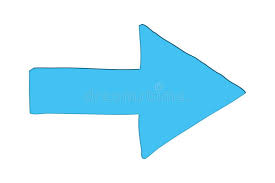
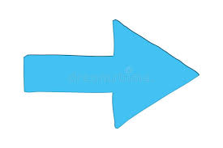

¡ Venid a visitar Chauvigny !
Chauvigny es una ciudad muy interesante, histórica, y muy bonita. ¡ Chauvigny es una ciudad
conocida como uno de los « Más bonito Desvío De Francia » ! Chauvigny se sitúa en el centro-oeste
de Francia, en el departamento de la « Vienne » en la región « Nouvelle-Aquitaine» (Nueva-Aquitaine).
Los habitantes de la ciudad se llaman las « Chauvinois(es) ».


Un mapa
Las actividades que tienes que hacer
Para comenzar, en Chauvigny, hay muchas actividades que tienes que hacer.
Esta es una lista de las actividades más popular que tienes que hacer :
- Visitar la ciudad medieval,
- Hacer bicicleta sobre raíles,
- Ir a ver el espectacúlo los gigantes de los cielo,
- Visitar la iglesia Saint-Pierre de Chauvigny,
- Ver el castillo de las águilas,
- Ir al museo de las tradiciones populares...
Luego, no puedes irte sin ver :
- La ciudad medieval,
- El jardín público,
- La iglesia Notre-Dame,
- El museo de arqueologí industrial du Donjon de Gouzon
Por último, si vosotros queréis saber más informaciónes sobre las actividades, que podéis descargar este documento
debajo. En este documento, están más informaciónes sobre los lugares y las actividades que tienes que ver y hacer.

Historia de Chauvigny
El castillo fue construido durante los años 1000, por los obispos de Poitiers, señores de la ciudad.
Los señores de los alrededores construyeron castillos en las proximidades del primero. Fueron
comprados por los obispos de Poitiers a mediados del siglo XIV. En 1356, la batalla de Poitiers se
perdió contra el hijo del rey de Inglaterra. La ciudad cambió de manos varias veces durante le Guerra
de los Cien Años. En 1642, la ciudad perdió su templo protestante.

Antes de 1947, Chauvigny es la única ciudad de Francia con tres ayuntamientos. Estaba el municipio de :
Chauvigny, Saint-Pierre que se llama la « Ville-Haute » (la ciudad alta) y
« Saint-Pierre-les-églises » (Saint-Pierre-las-iglesias) que se llama « le bourg » (el pueblo).
En 1947, los tres municipios fueron unidos bajo el nombre de Chauvigny.


Hoy, ha desaparecido sustituido por un cabildo y una "hall"(construcción) por decisión del ayuntamiento de 1824.
 


- 1823 : autorizatión real para fabricar Notre-Dame,
- 1824 : el ayuntamiento vota por la construcción del ayuntamiento y del mercado.